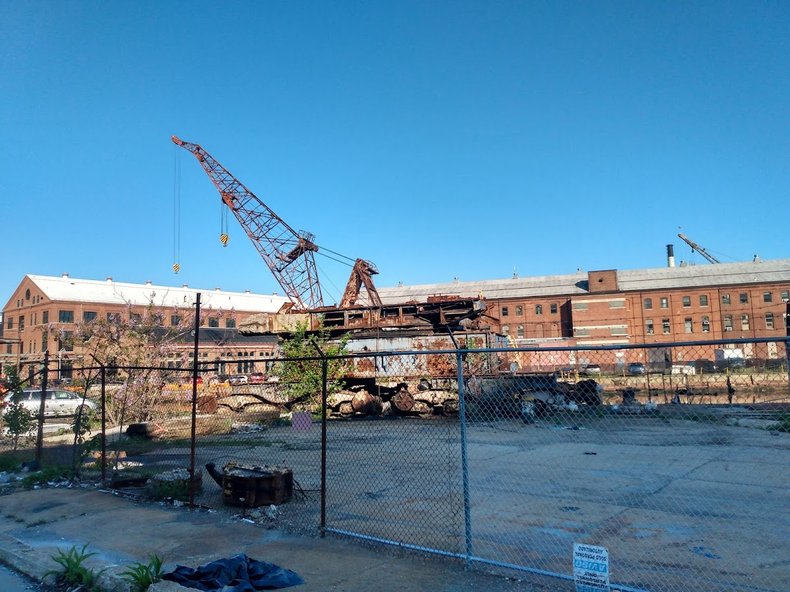
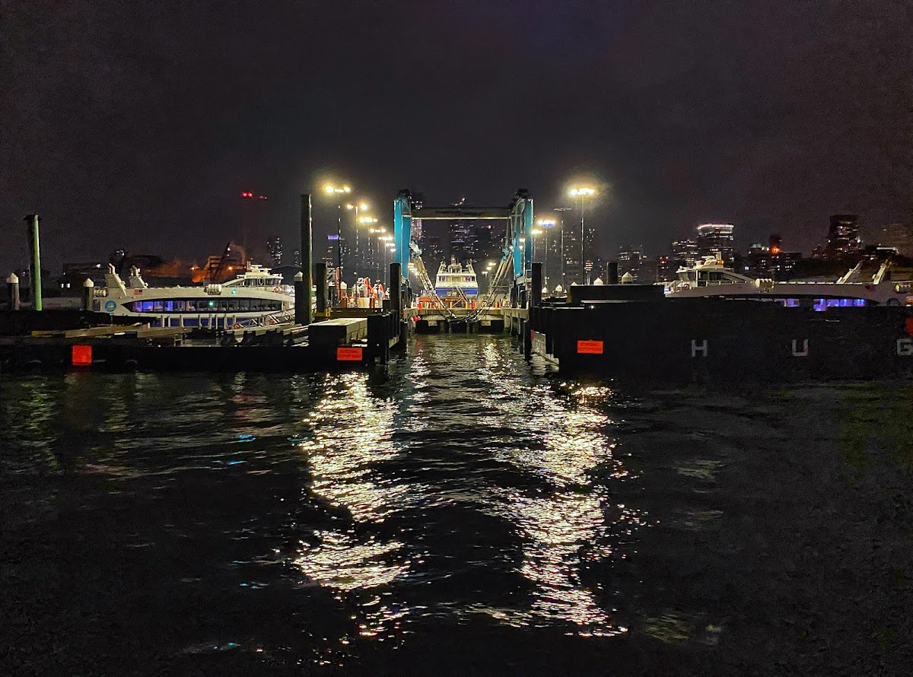
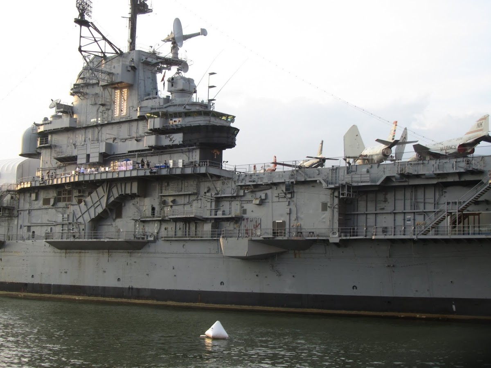

Public / private
Brooklyn Navy Yard
A historic shipyard and industrial complex located in Brooklyn, now repurposed as a hub for manufacturing, technology, and creative industries.
Background
Established in 1801, the Brooklyn Navy Yard was a key naval shipbuilding facility for the U.S. Navy until its closure in 1966. It was later redeveloped into an industrial park, preserving its historic structures while fostering modern industries. Today, it is a model for adaptive reuse and urban regeneration.
Original AI-assisted background; not independently verified.
Check current access before visiting. A place on this map is not necessarily open to the public.
Nearby places
- Claremont/Vanderbilt New townhouses with communal garden0.2 mi ↗
- Commandants Mansion0.5 mi ↗
- Little/Evans Street0.5 mi ↗
- 246 Washington Ave0.6 mi ↗
Straight-line distances, not walking routes.
Discussion & corrections



Photo credits
Pekka Auvinen, Warren, Arik Karagyozyan, Eric Knoblauch, Laetitia Longuefosse, Jean-Renaud Micolet40.69911, -73.97285 · Explore the surrounding area ↗